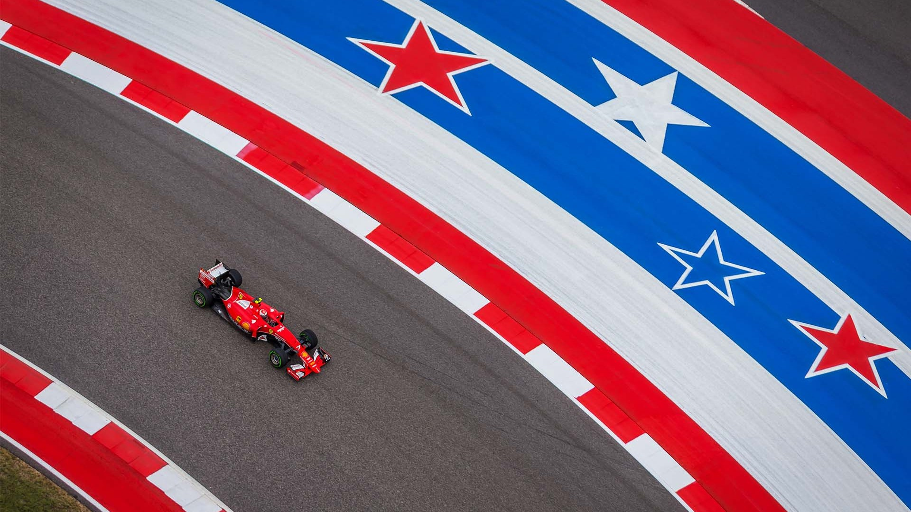
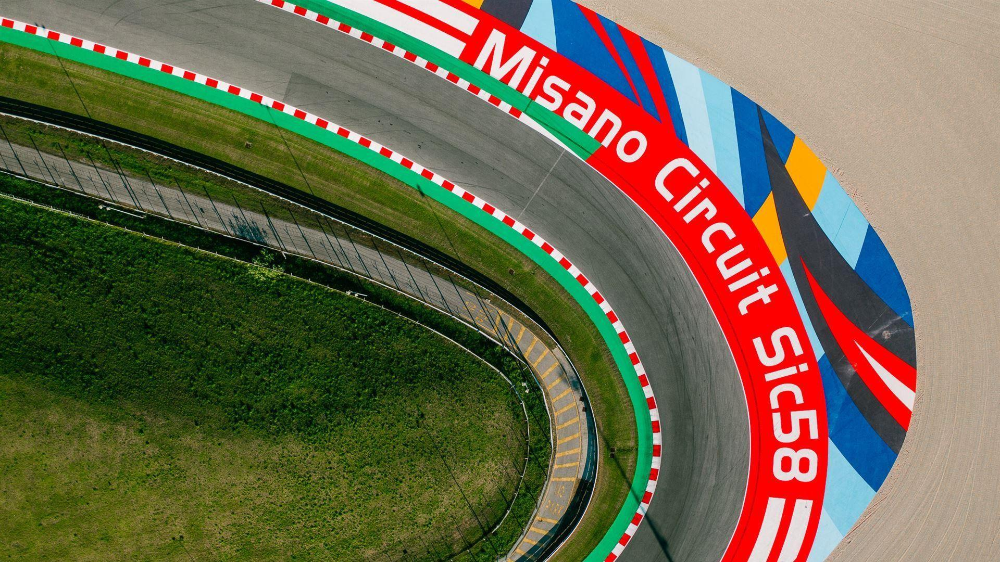
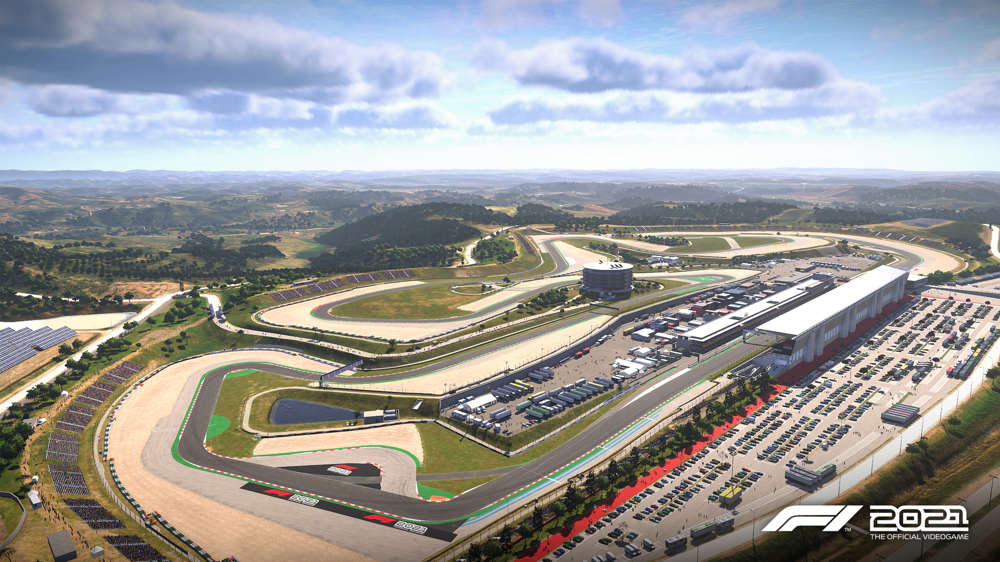
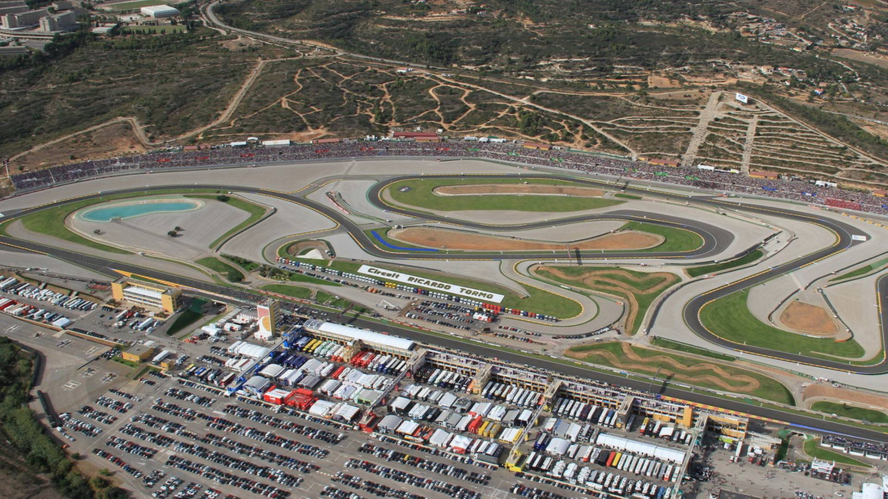

Austin
Gran Premio de las Américas de Motociclismo
El Gran Premio de las Américas de Motociclismo es una carrera de motociclismo de velocidad que se disputa en el Circuito de las Américas desde la temporada 2013 del Campeonato del Mundo de Motociclismo. Fue la tercera carrera de MotoGP de la temporada 2013 que tuvo lugar en Estados Unidos, junto al Gran Premio de Estados Unidos en Laguna Seca y al Gran Premio de Indianápolis. El Gran Premio de Estados Unidos no se volvió a realizar, y el Gran Premio de Indianápolis se corrió por última vez en 2015.

Misano
Gran Premio de Emilia-Romaña de Motociclismo
El Gran Premio de las Américas de Motociclismo es una carrera de motociclismo de velocidad que se disputa en el Circuito de las Américas desde la temporada 2013 del Campeonato del Mundo de Motociclismo.1 Fue la tercera carrera de MotoGP de la temporada 2013 que tuvo lugar en Estados Unidos, junto al Gran Premio de Estados Unidos en Laguna Seca y al Gran Premio de Indianápolis. El Gran Premio de Estados Unidos no se volvió a realizar, y el Gran Premio de Indianápolis se corrió por última vez en 2015.

Portimão
Gran Premio de Algarve de Motociclismo
El Gran Premio de Algarve de Motociclismo es una carrera de motociclismo de velocidad que forma parte del calendario de la temporada 2021 de MotoGP. Debe su nombre a que el Autódromo Internacional do Algarve se encuentra en el Región de Algarve y como uno de los tres circuitos en los que, debido a las cancelaciones y aplazos de grandes premios por causa de la pandemia del coronavirus, se van a disputar dos grandes premios, era necesario una nueva denominación para distinguirlo del Gran Premio de Portugal.

Cheste
Gran Premio de la Comunidad Valenciana
El Gran Premio de la Comunidad Valenciana (en valenciano: Gran Premi de la Comunitat Valenciana) es una carrera de motociclismo de velocidad que se corre en el Circuito Ricardo Tormo desde el año 1999 como parte del calendario del Campeonato Mundial de Motociclismo. Es una de las cuatro fechas de dicha competencia que se celebra en España, junto con el Gran Premio de España de Motociclismo, el Gran Premio de Cataluña de Motociclismo y el Gran Premio de Aragón de Motociclismo. Su presencia está asegurada como mínimo hasta 2021 gracias al acuerdo alcanzado entre la Generalidad Valenciana y Dorna.